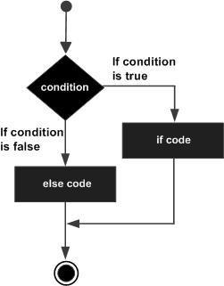

C语言 逻辑判断if...else语句
一个 if 语句 后可跟一个可选的 else 语句，else 语句在布尔表达式为 false 时执行。
语法
C 语言中 if...else 语句的语法：
if(boolean_expression)
{
/* 如果布尔表达式为真将执行的语句 */
}
else
{
/* 如果布尔表达式为假将执行的语句 */
}
如果布尔表达式为 true，则执行 if 块内的代码。如果布尔表达式为 false，则执行 else 块内的代码。
C 语言把任何非零和非空的值假定为 true，把零或 null 假定为 false。
流程图

实例
文件名:logic-ifelse.c
#include <stdio.h>
int main ()
{
/* 局部变量定义 */
int a = 100;
/* 检查布尔条件 */
if( a < 20 )
{
/* 如果条件为真，则输出下面的语句 */
printf("a 小于 20\n" );
}
else
{
/* 如果条件为假，则输出下面的语句 */
printf("a 大于 20\n" );
}
printf("a 的值是 %d\n", a);
return 0;
}
gcc /share/lesson/c/logic-ifelse.c && ./a.out
康康
if...else if...else 语句
一个 if 语句后可跟一个可选的 else if...else 语句，这可用于测试多种条件。
当使用 if...else if...else 语句时，以下几点需要注意：
- 一个 if 后可跟零个或一个 else，else 必须在所有 else if 之后。
- 一个 if 后可跟零个或多个 else if，else if 必须在 else 之前。
- 一旦某个 else if 匹配成功，其他的 else if 或 else 将不会被测试。
语法
C 语言中的 if...else if...else 语句的语法：
if(boolean_expression 1)
{
/* 当布尔表达式 1 为真时执行 */
}
else if( boolean_expression 2)
{
/* 当布尔表达式 2 为真时执行 */
}
else if( boolean_expression 3)
{
/* 当布尔表达式 3 为真时执行 */
}
else
{
/* 当上面条件都不为真时执行 */
}
实例
文件名:logic-ifelseifelse.c
#include <stdio.h>
int main ()
{
/* 局部变量定义 */
int a = 100;
/* 检查布尔条件 */
if( a == 10 )
{
/* 如果 if 条件为真，则输出下面的语句 */
printf("a 的值是 10\n" );
}
else if( a == 20 )
{
/* 如果 else if 条件为真，则输出下面的语句 */
printf("a 的值是 20\n" );
}
else if( a == 30 )
{
/* 如果 else if 条件为真，则输出下面的语句 */
printf("a 的值是 30\n" );
}
else
{
/* 如果上面条件都不为真，则输出下面的语句 */
printf("没有匹配的值\n" );
}
printf("a 的准确值是 %d\n", a );
return 0;
}
gcc /share/lesson/c/logic-ifelseifelse.c && ./a.out
康康